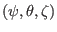
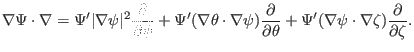

Next:
Surface differential operators
Up:
Flux coordinate system
Previous:
Magnetic field expression in
Radial differential operator
The form of the radial differential operator
in

coordinates is given by

(
167
)
(Refer to my notes ``tokamak_equilibrium.tm'' for the proof.)
yj 2015-09-04